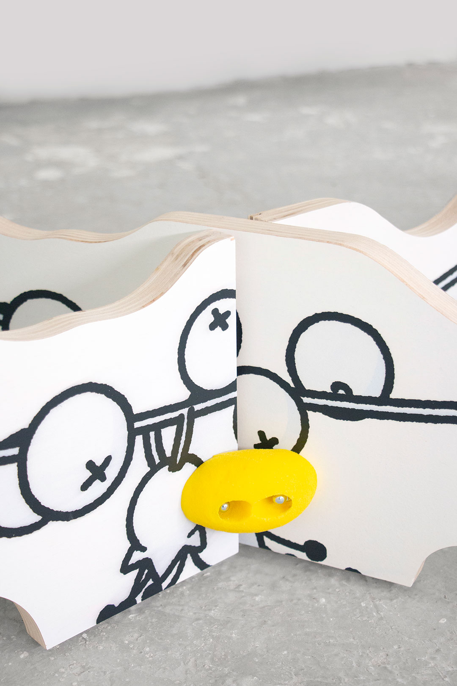
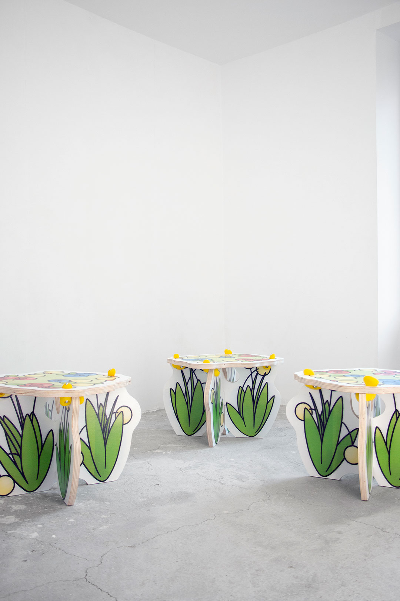
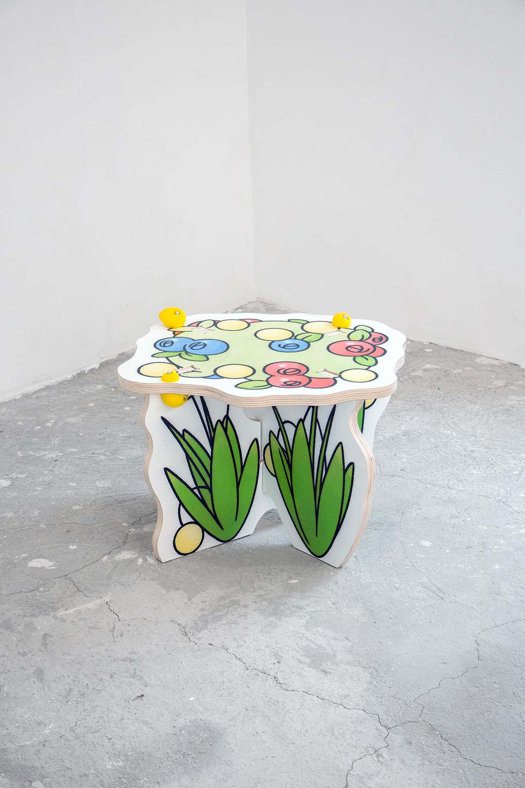

index | shop | info | contact | chaos
Flower Table and Grass Stools, Flower Garden n°1, were developed in 2023, blending the structure of kindergarten infrastructure with the printed surfaces of a theater set.
Together, the pieces bring for the first time the endearing floral vocabulary of Plush Garden closer to a trompe l'oeil effect.
Flower Table, Flower Garden n°1 (2023) | Okoume plywood, CNC cut, acrylic paint, UV print, polyurethane | 70. 149. 109cm | img01 and img2 by Augustin Puzio↗ (made to order via shop)

Grass Stools, Flower Garden n°1 (2023) | Okoume plywood, CNC cut, acrylic paint, UV print, polyurethane | 42. 53. 52cm | img03 to img6 by Augustin Puzio↗ (made to order via shop)



*This website was last updated on July 1, 2026.